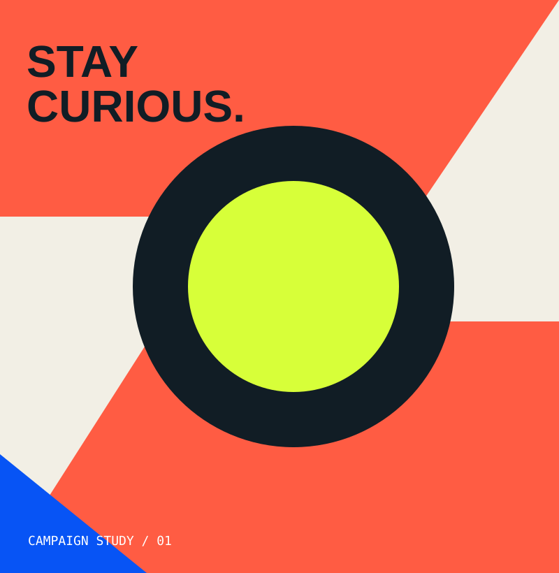
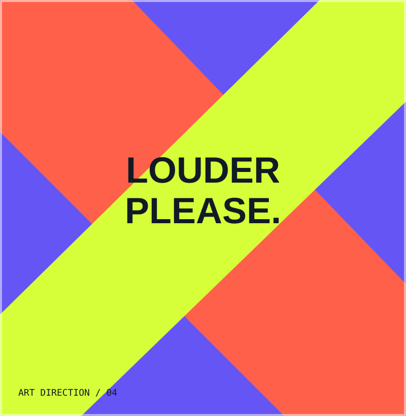
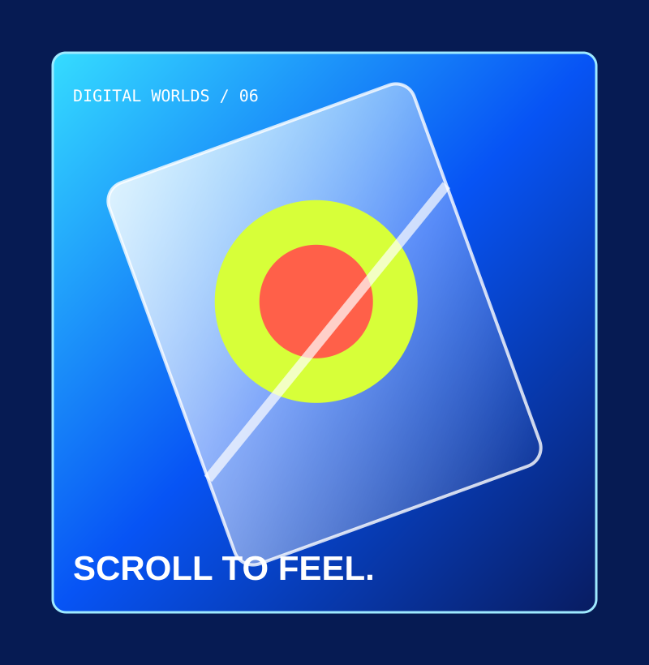

DISEÑO PROFESIONAL GRÁFICO / DIRECCIÓN DE ARTE
Ideas que
se hacen visibles.
Campañas y piezas visuales creadas para capturar atención, comunicar con claridad y darle forma a las ideas.
↓ CAMPAÑAS Y PROYECTOSSCROLL EXPERIENCE




CAMPAÑA / DISEÑO GRÁFICO01 / 05↗
↓
Las piezas cambian mientras avanzas
CONCEPTOS ILUSTRATIVOS · REEMPLAZAR POR PROYECTOS REALESSENSIBLE REALITY
01 — UN PENSAMIENTO VISUALDESLIZA PARA DESCUBRIR ↓
02 / EL PUNTO DE PARTIDAMENOS RUIDO. MÁS INTENCIÓN.
No se trata
de hacer más.
Se trata de
decirlo mejor.
✳
Una buena pieza no necesita gritar para llamar la atención. Necesita una idea clara, una dirección visual precisa y una razón para existir.
ESTRATEGIA VISUAL · EJECUCIÓN03 / CONSULTORÍA DE DISEÑOCRITERIO · DIRECCIÓN · CLARIDAD
UNA MIRADA EXPERTA PARA TU MARCA
Tu marca
necesita dirección.
No más
ruido.
Analizo tu comunicación visual, identifico oportunidades de mejora y te ayudo a tomar decisiones de diseño con mayor claridad.
HABLEMOS DE TU MARCA ↗ ®DESIGN CONSULTING
Diagnóstico visual
Revisamos tu marca, tus piezas y la forma en que te comunicas para detectar oportunidades concretas.
Dirección creativa
Definimos un rumbo visual coherente y criterios para que tus próximas decisiones tengan intención.
Asesoría personalizada
Una sesión para resolver dudas, evaluar propuestas o encontrar claridad frente a un reto de diseño.
PARA MARCAS, EMPRENDEDORES Y EQUIPOS
La consultoría se adapta al reto que tengas. Empezamos por conversar sobre tu necesidad y definir el alcance.
ESTRATEGIA VISUAL / SIN FÓRMULAS PREFABRICADASCUÉNTAME QUÉ NECESITAS ↗
04 / TRAYECTORIAEXPERIENCIA · CRITERIO · COLABORACIÓN
EXPERIENCIA
Hola, soy Javier.
Diseñador Profesional Gráfico.
Cuento con más de 9 años de experiencia creando comunicación visual, campañas publicitarias y piezas gráficas para marcas, empresas y agencias.
9+AÑOS DE EXPERIENCIA
10+EMPRESAS Y AGENCIAS
20+MARCAS TRABAJADAS
EXPERIENCIA EN PROYECTOS PARAMarcas que forman
Marcas que forman
parte del recorrido.
Una selección de marcas con las que he tenido experiencia a través de proyectos y colaboraciones profesionales.
Disney
MARVEL
PlayStation
CALL OF DUTY
WARZONE
WARZONE
logitech
LG UltraGear
MARCA 07
MARCA 08
MARCA 09
MARCA 10
MARCA 11
MARCA 12
MARCA 13
MARCA 14
MARCA 15
MARCA 16
MARCA 17
MARCA 18
MARCA 19
MARCA 20
MARCA 21
MARCA 22
MARCA 23
MARCA 24
Las marcas se muestran como referencia de experiencia profesional en proyectos y colaboraciones; no implica necesariamente contratación directa por parte de cada marca.
05 / SELECCIÓN DE TRABAJOCAMPAÑAS · PIEZAS GRÁFICAS
La idea es
el inicio.
Una selección de espacios visuales para mostrar campañas, sistemas gráficos y piezas que llevan una idea a distintos formatos.
01CAMPAIGN STUDY / 001
✳
CAMPAÑAS PUBLICITARIASUna idea.
Una idea.
Un universo visual.
SISTEMAS GRÁFICOSUna identidad que
Una identidad que
se adapta y conecta.
DIRECCIÓN DE ARTEUn lenguaje propio.
Un lenguaje propio.
Una sensación.

04 / CONTENIDO DIGITALDiseñado para
Diseñado para
vivir en movimiento.
De una idea central a un conjunto de piezas que mantienen su fuerza en diferentes formatos.
Las composiciones incluidas son placeholders conceptuales. Sustituir por campañas y piezas reales antes de publicar.
06 / CÓMO TRABAJOIDEA → DIRECCIÓN → RESULTADO
Diseño con
intención.
Cada proyecto tiene un reto diferente. El proceso empieza escuchando y termina en una solución visual que responde a lo que necesitas.
Entender
Definimos el objetivo, el público y lo que la comunicación necesita conseguir.
Encontrar la idea
Construimos un concepto y una dirección visual con una intención clara.
Llevarla a la realidad
Desarrollamos las piezas necesarias, cuidando la coherencia en cada formato.
07 / EL SIGUIENTE PASOPROYECTOS · COLABORACIONES
¿TIENES UNA IDEA EN MENTE?
Hagamos que
pase.
SERVICIO A MEDIDA · 001
DISEÑO & DIRECCIÓN CREATIVA
La solución visual que tu marca necesita.
Alcance y propuesta definidos contigo.
PROPUESTA PERSONALIZADA↗